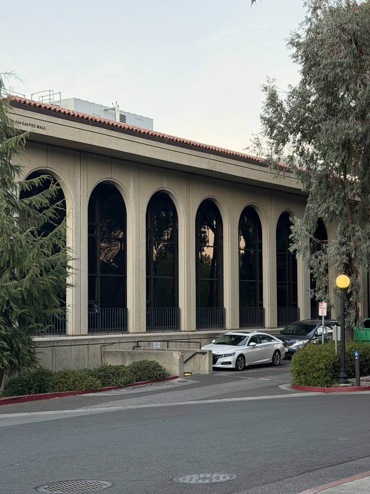
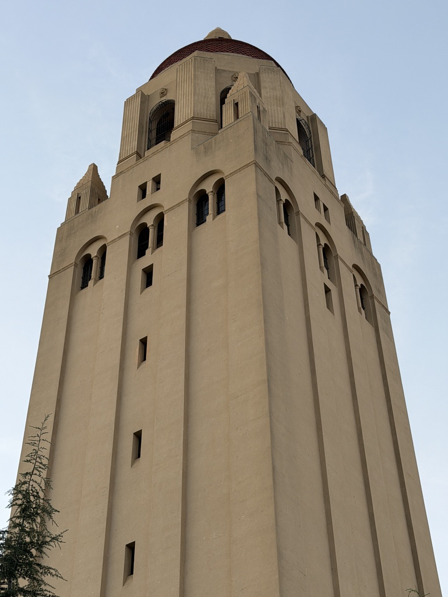
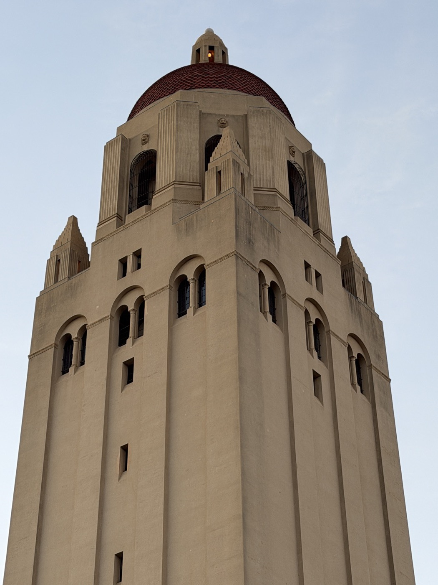

Namwook Lee September 2 at 7:19 PM · Part 1 · Selfie This could be two different people! 24 mm · ~1.5 ft 151 mm · ~9.5 ft
Namwook Lee September 2 at 7:34 PM · Stanford, CA · Part 2 · Compression From the second best University in California Galvez · 24 mm, close Galvez · 63 mm, far  Hoover · 60 mm, close  Hoover · 77 mm, far 
Namwook Lee September 2 at 10:55 PM · Part 3 · Dolly zoom What’s hidden in the olive jar..? 7 frames · dolly zoom